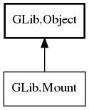

Mount
Object Hierarchy:

Description:
public interface Mount :
Object
Namespace: GLib
Package: gio-2.0
Content:
Methods:
- public abstract bool can_eject ()
- public abstract bool can_unmount ()
- public abstract async bool eject (MountUnmountFlags flags, Cancellable? cancellable = null) throws Error
- public abstract async bool eject_with_operation (MountUnmountFlags flags, MountOperation? mount_operation, Cancellable? cancellable = null) throws Error
- public abstract File get_default_location ()
- public abstract Drive get_drive ()
- public abstract Icon get_icon ()
- public abstract string get_name ()
- public abstract File get_root ()
- public virtual unowned string get_sort_key ()
- public abstract Icon get_symbolic_icon ()
- public abstract string get_uuid ()
- public abstract Volume get_volume ()
- public abstract async string[] guess_content_type (bool force_rescan, Cancellable? cancellable = null) throws Error
- public abstract string[] guess_content_type_sync (bool force_rescan, Cancellable? cancellable = null) throws Error
- public bool is_shadowed ()
- public abstract async bool remount (MountMountFlags flags, MountOperation? mount_operation, Cancellable? cancellable = null) throws Error
- public void shadow ()
- public abstract async bool unmount (MountUnmountFlags flags, Cancellable? cancellable = null) throws Error
- public abstract async bool unmount_with_operation (MountUnmountFlags flags, MountOperation? mount_operation, Cancellable? cancellable = null) throws Error
- public void unshadow ()
Signals: